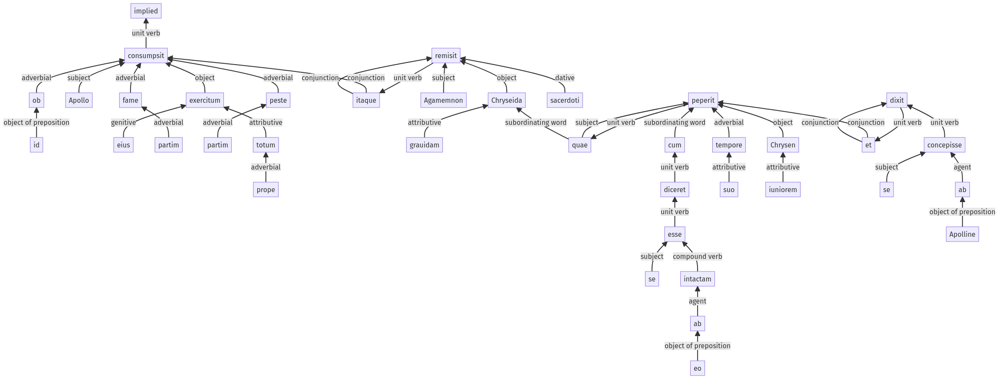

Hyginus, Fabulae, 121a.2.1-121a.2.37a
| 121a.3.1-121a.3.16a
Sentence 1198
121a.2.1-121a.2.37a
ob id Apollo exercitum eius partim fame partim peste prope totum consumpsit, itaque Agamemnon Chryseida grauidam sacerdoti remisit, quae cum diceret se ab eo intactam esse, suo tempore peperit Chrysen iuniorem et dixit se ab Apolline concepisse.
1 ob id Apollo exercitum eius partim fame partim peste prope totum consumpsit
1 itaque Agamemnon Chryseida grauidam sacerdoti remisit
2 quae
3 cum diceret
4 se ab eo intactam esse
2 suo tempore peperit Chrysen iuniorem
1 et dixit
3 se ab Apolline concepisse
ob id Apollo exercitum eius partim fame partim peste prope totum consumpsit, itaque Agamemnon Chryseida grauidam sacerdoti remisit, quae cum diceret se ab eo intactam esse, suo tempore peperit Chrysen iuniorem et dixit se ab Apolline concepisse.
Highlighting:
- connecting words
- unit verb
- subject
- object
Color code:
- Independent clause (level 1, transitive verb)
- Independent clause (level 1, transitive verb)
- subordinate clause (level 2, transitive verb)
- subordinate clause (level 3, transitive verb)
- indirect statemet (level 4, transitive verb)
- subordinate clause (level 2, transitive verb)
- indirect statement (level 3, transitive verb)
